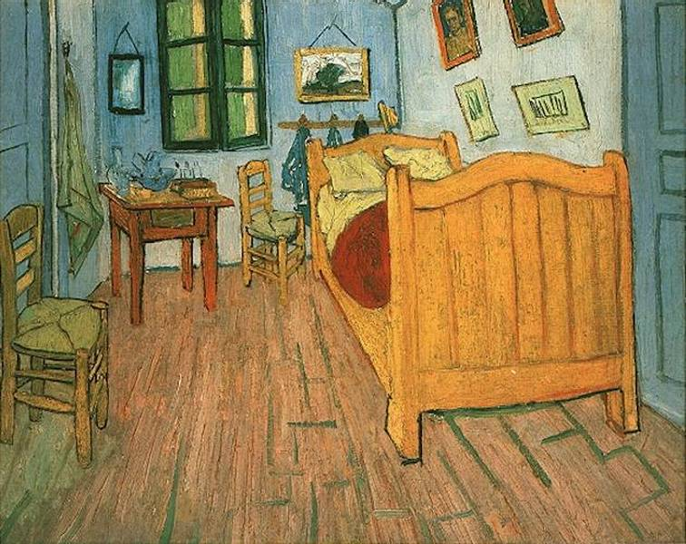
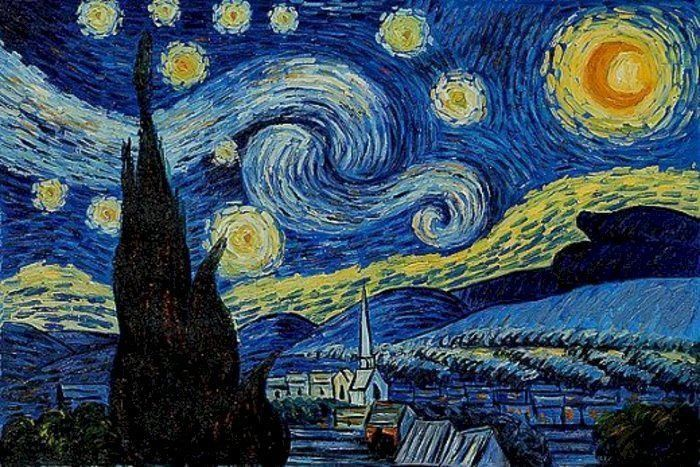
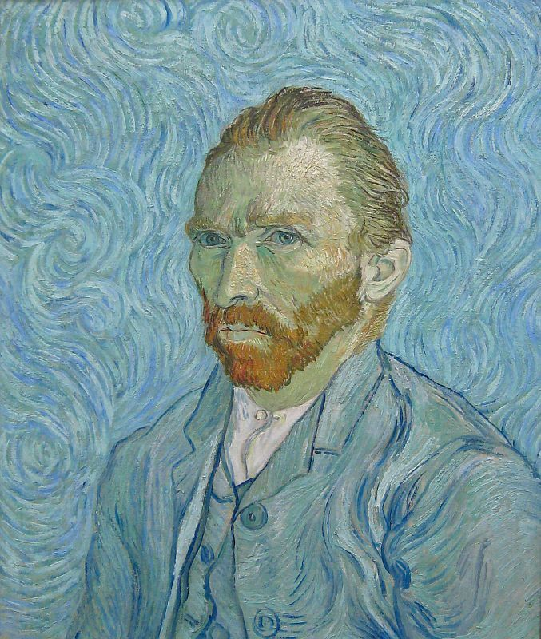
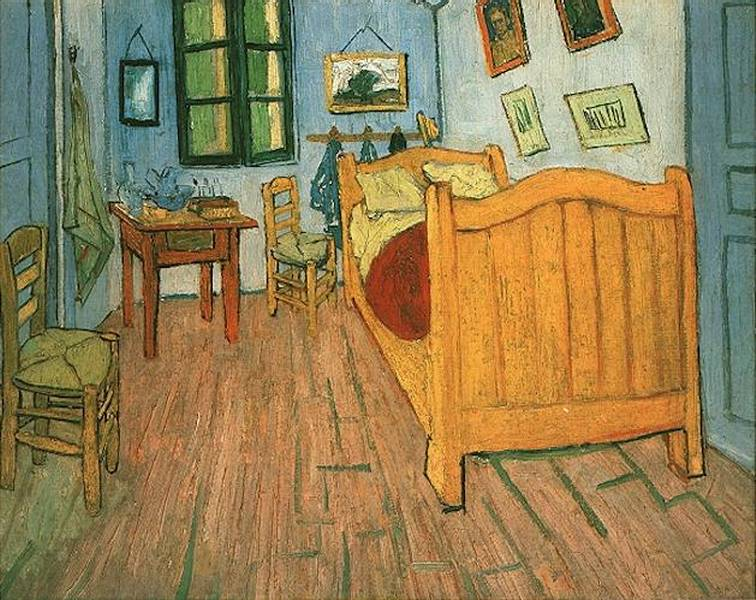
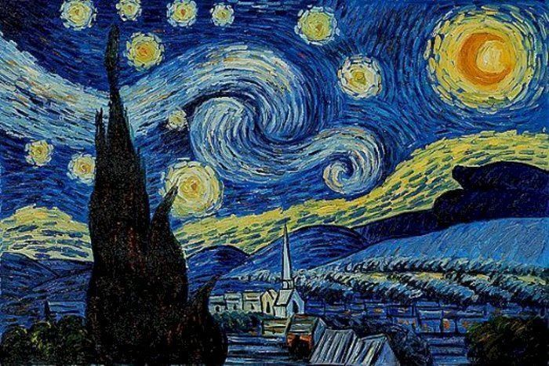
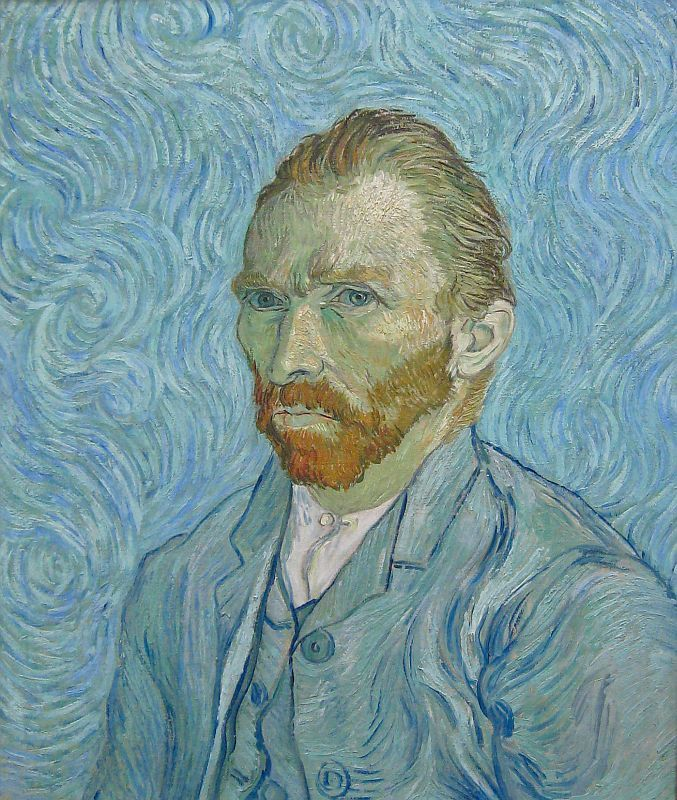

Curiosidades

Começo
Van Gogh começou a pintar em 1880, aos 27 anos. Antes disso, ele trabalhou como vendedor de arte e missionário.
Trabalhos
Ele era um artista prolífico. Ele criou mais de 500 (aqueles mapeados) trabalhos ao longo de sua vida, incluindo pinturas, desenhos e aquarelas.
Sucesso
Ele só vendeu um quadro durante sua vida. O quadro, "O Vinhedo Vermelho", foi vendido para um colecionador belga por apenas 400 francos.
Saúde
Ele sofria de problemas de saúde mental. Ele foi diagnosticado com epilepsia do lobo temporal e esquizofrenia.
Internação
Van Gogh foi internado em um sanatório em Saint-Rémy-de-Provence em 1889.
Morte
Sua morte foi um mistério. Ele morreu por um tiro na cabeça, mas não se sabe se foi um suicídio ou assassinato.
 




